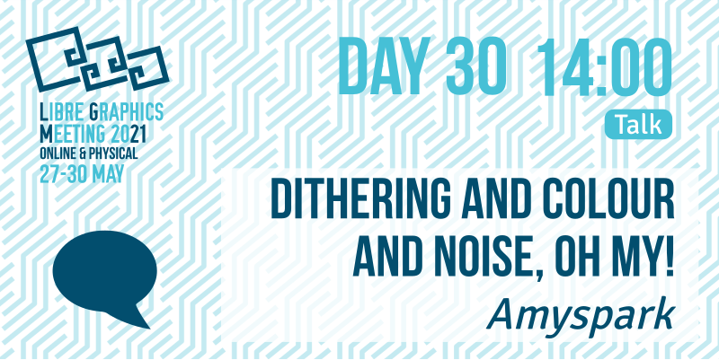

In this talk, we will examine the state of the art of digital halftoning techniques, how they can be used, and how these were implemented in Krita to improve the rendering quality of gradients.
Spatial dithering, also known as digital halftoning, is a technique used to simulate a higher color depth in images using a limited color palette (1). It approximates shades of colour not available in the palette using a spatial distribution of available colours, taking advantage of the human eye's tendency to average colours in a neighbourhood. This technique has its origins in the printing industry: halftoning is the process of rendering an image as a pattern of coloured dots, exchanging color resolution or bit depth for spatial resolution (1).
Common issues that are addressed by dithering are colour shift and false contours . When an image is quantized, the luma and chroma of the area covered by each pixel is classified into one of the available colors in the device's palette, resulting in a shift that may be visible to the naked eye. When there are insufficient colours to represent an otherwise smooth transition, banding, or the formation of false edges may occur (2). Low level graphics libraries, image processing toolkits, as well as graphics drivers and output peripherals themselves, use dithering as a computationally cheap way to work around these issues.
Throughout its history, Krita used 8-bit resolution and the sRGB color space exclusively to render gradients, ignoring the color space and bit depth of the image. This resulted in very visible banding artifacts, a behaviour that was reported in bug 343864. During the last month of 2020 and the start of 2021, we implemented high dynamic range gradients by rendering the gradient in the image's color space, with 16-bit as a minimum depth, and adding dithering in the gradient's render step if the image's depth is lower. This talk will analyze the technical aspects of this work. We will start by summarizing the available techniques for achieving perceptually similar images in monitors and their tradeoffs; in the second part, we will describe our work, its main features and the end results.
[1]: A. Deshpande, I. Misra and P. J. Narayanan, "Hybrid implementation of error diffusion dithering," 2011 18th International Conference on High Performance Computing, Bengaluru, India, 2011, pp. 1-10, https://doi.org/10.1109/HiPC.2011.6152714.
[2]: L. Akarun, Y. Yardunci and A. E. Cetin, "Adaptive methods for dithering color images," in IEEE Transactions on Image Processing, vol. 6, no. 7, pp. 950-955, July 1997, https://doi.org/10.1109/83.597270.